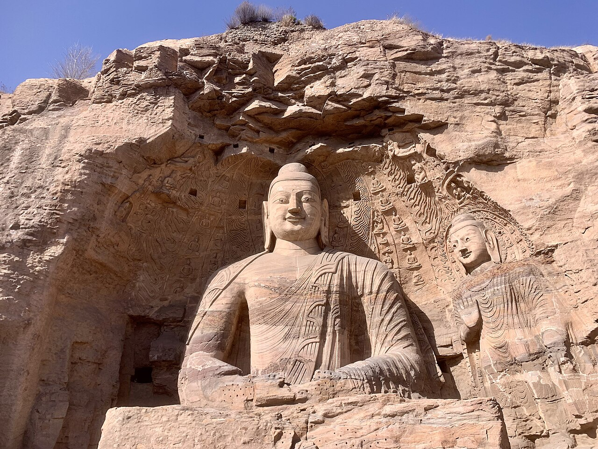
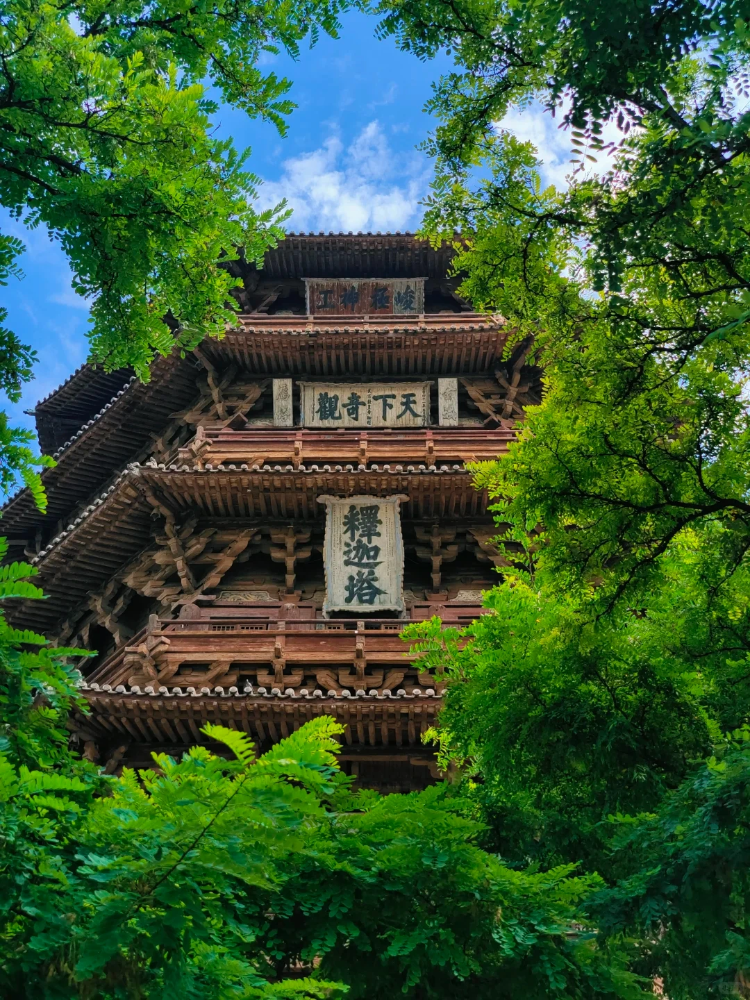
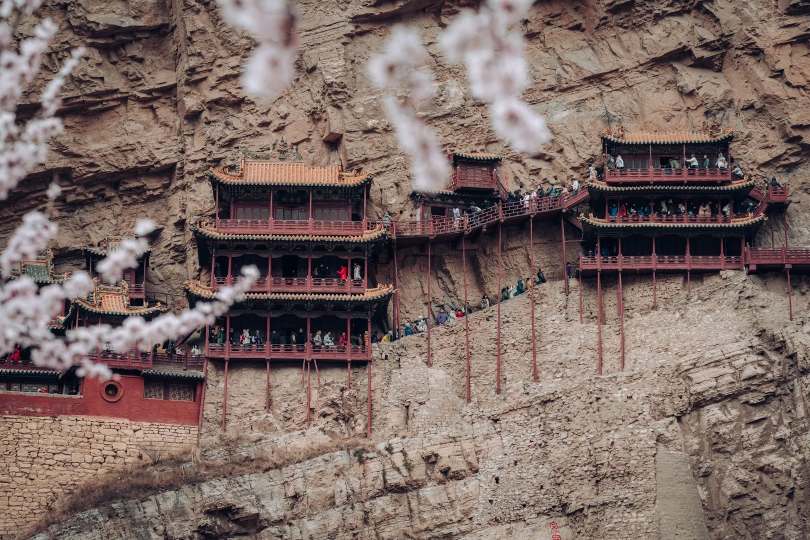
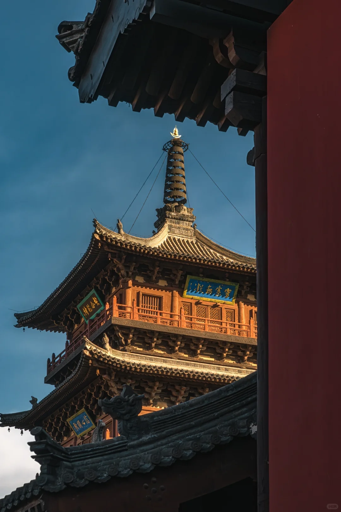
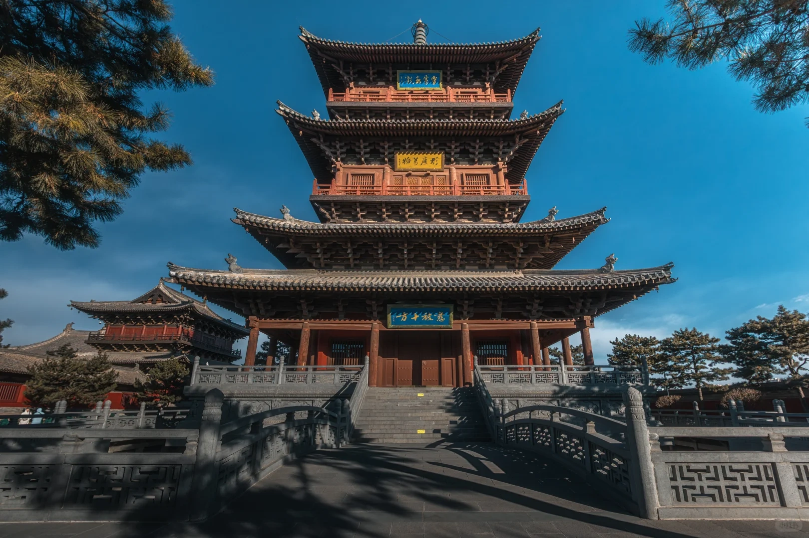
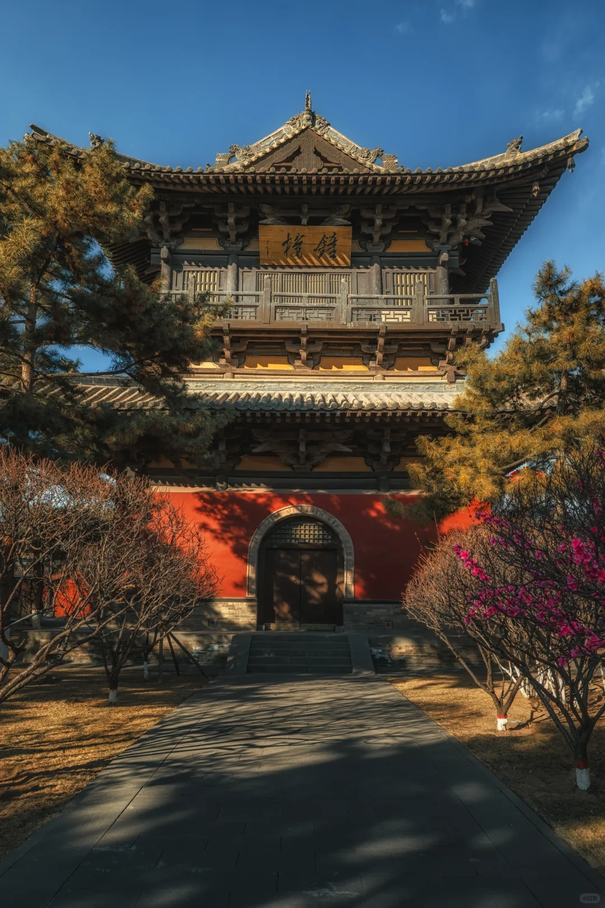
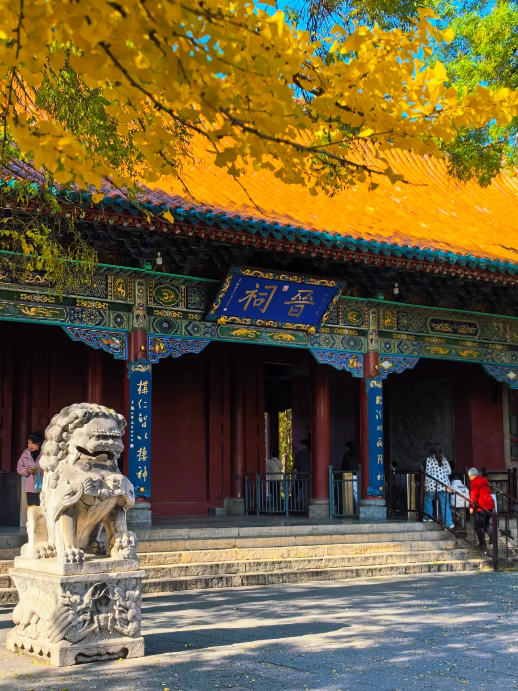
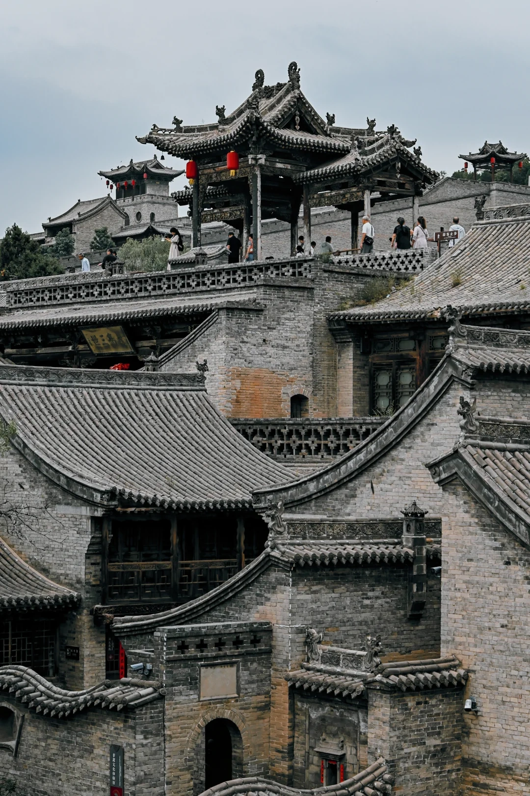
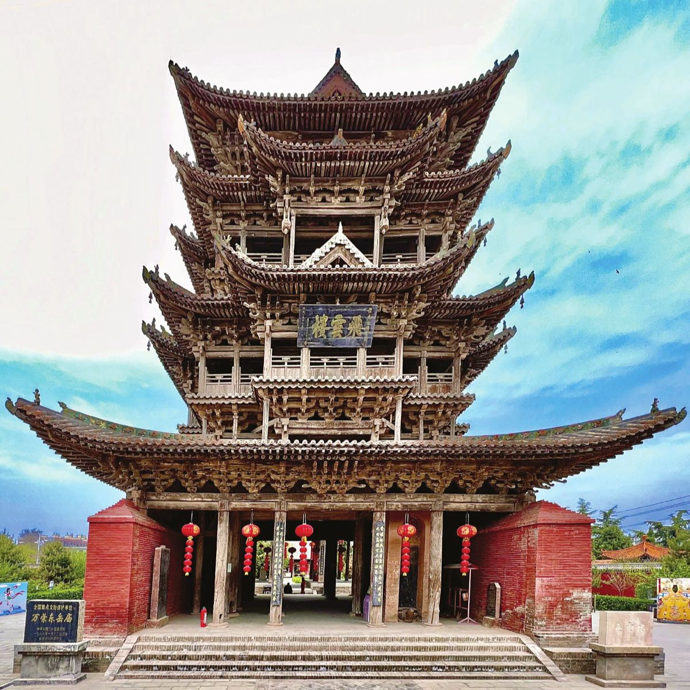
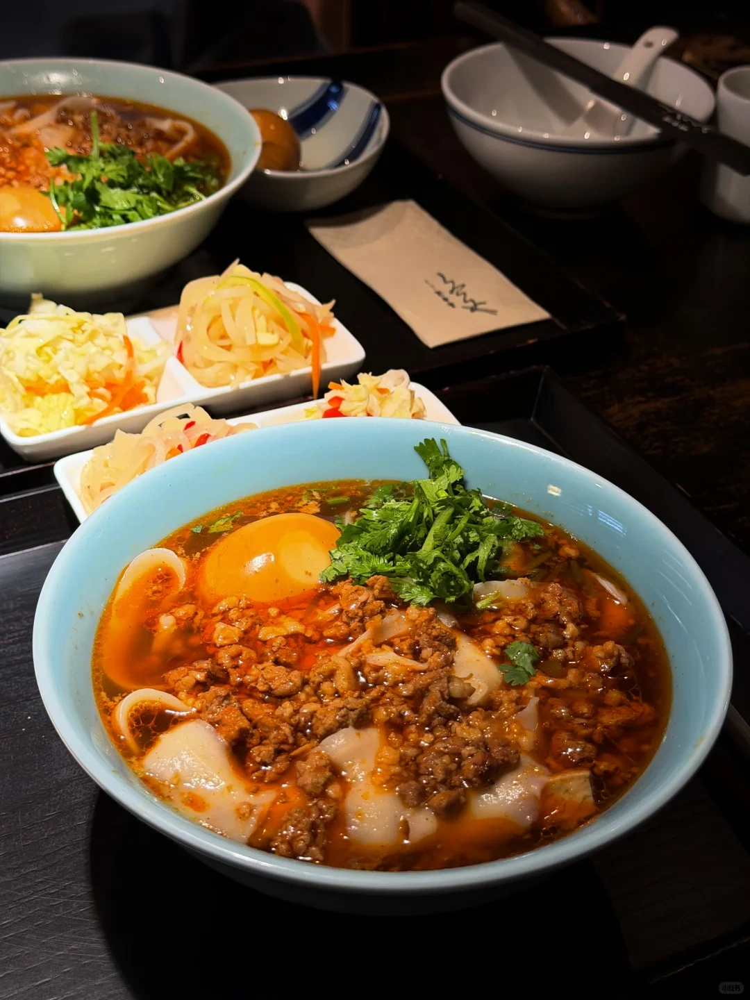

01 · Overview
先看结论
路线从大同向南至运城，固定酒店不变。9/26与9/30以转场和会合为主，10/1-10/4自驾。10/2、10/3预留更多交通缓冲。
交通：10/1-10/4自驾，爸爸主驾、妈妈可轮换。10/2、10/3驾驶时间较长。
9/10路线空间合理度
约812 km10/1-10/4原表自驾里程
10/2最容易超负荷
10/3交通波动最大
大同→应县 / 浑源→忻州→太原→平遥→洪洞 / 隰县→壶口→万荣 / 芮城→运城
02 · Hard constraints
已确定交通安排
| 日期 | 刚性安排 | 备注 |
|---|---|---|
| 9/26 | G469 南京南 14:23 → 大同南 21:57 | 到站后直接入住。 |
| 9/30 | 爸爸南京 → 太原，原计划 HO2325 18:50 → 20:45 | 妈妈和奶奶先到太原；晚上只会合、休息。 |
| 10/1-10/4 | 三人自驾，爸爸主驾、妈妈可轮换 | 10/2-10/3驾驶时间较长，预留休息和轮换。 |
| 10/5 | 运城返南京，原计划约 10:20 → 12:10 | 预留还车、行李和安检时间。 |
03 · Weather
当前天气参考
当前先显示完整远期参考，不留空；进入更近预报窗口后自动更新。
更新于 9月5日 21:05
日期 / 行程地
天气
温度
降水 / 风
9/26 · 大同
远期参考
4–16℃
等待逐日预报
9/27 · 大同
远期参考
5–16℃
等待逐日预报
9/28 · 应县 / 浑源
远期参考
9–21℃
等待逐日预报
9/29 · 大同 → 忻州
远期参考
9–19℃
等待逐日预报
9/30 · 忻州 → 太原
远期参考
9–21℃
等待逐日预报
10/1 · 太原 → 平遥
远期参考
9–23℃
等待逐日预报
10/2 · 平遥 → 洪洞 → 隰县
远期参考
7–25℃
等待逐日预报
10/3 · 隰县 → 壶口 → 万荣
远期参考
7–19℃
等待逐日预报
10/4 · 万荣 → 芮城 → 运城
远期参考
13–22℃
等待逐日预报
10/5 · 运城
远期参考
10–23℃
等待逐日预报
现在先显示完整的远期参考值；进入逐日预报窗口后，页面会自动替换天气、温度、降水概率和风速。
04 · Day by day
逐日执行
9/26
南京 → 大同
行程
- G469 14:23-21:57，铁路约7小时34分。
- 到大同南后直接接送、入住。
- 车上分段喝水、适当活动；到店后简单用餐，确认9/27预约。
奶奶靠垫、薄外套和易取零食放手边；车上适当活动腿脚。
风险中秋假期车站与接送有波动。
晚餐酒店附近热汤、蔬菜、清淡主食。
9/27
云冈石窟 → 大同博物馆 → 古城散步
安排
- 云冈石窟预留约2.5-3.5小时，重点看核心洞窟与第20窟。
- 大同博物馆安排在云冈之后；晚间视体力在古城散步。
- 云冈实名预约提前确认。
机动调整：时间不足时先取消晚间古城，再取消博物馆。

9/28
应县木塔 → 净土寺 → 悬空寺整体 → 永安寺
安排
- 木塔 + 悬空寺整体 + 永安寺为主；净土寺、圆觉寺承担机动。
- 悬空寺以山下整体观景为主；登临按预约、天气和现场状态决定。
- 停车、摆渡、候车时间另计。
机动调整：圆觉寺 → 净土寺 → 缩短永安寺；木塔与悬空寺整体保留。


9/29
华严寺 → 善化寺 → 九龙壁 → 忻州
安排
- 华严寺、善化寺、九龙壁。
- 代王府、乾楼放到9/27晚或取消。
- 下午转忻州，按订单预留进站时间。
机动调整：时间不足时保留华严寺，善化寺 / 九龙壁二选一。



9/30
忻州恢复 → 太原会合
安排
- 上午忻州古城短逛；妈妈和奶奶转太原后休息。
- 爸爸晚间按原航班到太原，会合后直接休息。
- 安排洗衣、充电，核对证件和预约。
奶奶午后休息，晚餐宜早。
爸爸到达后直接休息，第二天开始自驾。
吃饭酒店 / 吾悦广场附近用餐。
10/1
晋祠 → 镇国寺（机动）→ 双林寺 → 平遥
国庆首日
- 晋祠 + 双林寺；镇国寺为机动项。
- 普通导航约1h47；国庆按2.5-3.5h并加停车缓冲。
- 入住后视体力决定是否夜间散步。
机动调整：交通延误先取消镇国寺；严重拥堵时晋祠后直接前往平遥。

10/2
王家大院 → 广胜寺 → 大槐树（机动）→ 隰县
高负荷日
- 王家大院 + 广胜寺；大槐树为机动项。
- 约291km；普通导航约4h04，国庆按5-6h+准备。
- 王家大院以主院落为主；广胜寺按开放区域参观。
机动调整：路况、天气或状态不佳时取消大槐树；必要时王家大院 / 广胜寺二选一。

10/3
小西天 → 壶口瀑布 → 万荣
高客流日
- 小西天 + 壶口；万荣只安排入住。
- 约253km；普通导航约3h11，国庆按4-5.5h并加停车、摆渡缓冲。
- 小西天窄台阶停留时间宜短；壶口在安全栏杆内观景。
备选：严重拥堵或天气不佳时取消壶口，隰县直达万荣。
10/4
飞云楼 → 永乐宫 → 广仁王庙（机动）→ 解州关帝庙 → 运城
晋南古建
- 永乐宫为首要景点；飞云楼、关帝庙保留，广仁王庙为机动项。
- 约157km；普通导航约2h17，国庆按2.5-3.5h准备。

10/5
运城 → 南京
返程日
- 按原计划航班约10:20-12:10返南京，最终以订单为准。
- 早餐后前往机场 / 车站，预留还车、行李和安检时间。
- 前一晚整理证件、充电器、药品和发票。
奶奶早餐少量热食，候机优先找座。
驾驶按导航前往交通节点，先完成还车 / 停车。
返程预留还车、行李和安检时间。
05 · Stay
住宿安排
| 住宿 | 表内价格 / 设施 | 入住前确认 |
|---|---|---|
| 玩途·代王邻里｜大同古城 | 约¥1,192 / 约3晚；古城内、庭院、行李寄存 | 少楼梯、离出入口方便的房型；古城内上下车点。 |
| 福田花雨温泉度假酒店｜忻州古城 | 约¥599；温泉、停车、近古城 | 温泉开放时段、早餐和安静房。 |
| 卡曼·观博设计师酒店｜太原 | 约¥512；停车、洗衣、高层 | 安静房、上下车位置；晚餐在酒店周边。 |
| 恬雨轩·设计师·度假民宿｜平遥 | 约¥488；古城内、管家、行李接送 | 停车场 + 城门 + 行李接驳；提前确认停车场、接驳城门和行李接送。 |
| 凤凰泊岚酒店｜隰县 | 约¥623；早餐、停车/充电、距小西天近 | 奶奶和行李先门口下，再由驾驶员停车；确认停车位置。 |
| 辰煜·臻选酒店｜万荣 | 约¥338；停车、电梯、洗衣/烘干 | 确认停车、电梯、洗衣 / 烘干和早餐。 |
| 运城盐湖希尔顿欢朋 | 约¥716；早餐、停车、洗衣、品牌标准化 | 核对房型、早餐、停车和返程方向。 |
房型与总价：原表酒店约¥4,468；最终以订单的房间数、入住人数和早餐政策为准。
06 · Food
餐饮推荐

山西面食
转场多的几天，优先选热汤、面食和家常菜。比起追店，停车方便、能尽快坐下更重要。
| 地区 | 值得尝 | 建议 |
|---|---|---|
| 忻州 | 莜面、抿尖、碗托、瓦酥、羊杂 | 古城近处解决，服务恢复日。 |
| 太原 | 晋菜、系统面食 | 9/30晚餐以酒店周边为主；山西会馆另作备选。 |
| 壶口 / 吉县 | 黄河鲤鱼、黄河虾、黄米年糕 | 冯记鱼府可作备选，按当日排队决定。 |
| 运城 | 河东菜、饼类、晋南家常菜 | 选择清淡河东菜或晋南家常菜。 |
三人点菜参考：1个特色主食 + 1个荤菜 + 1个蔬菜 + 汤 / 凉菜。
07 · Before departure
临行前核对
| 时间窗 | 检查 | 影响 |
|---|---|---|
| 约9/12起 | 锁9/27云冈预约 | 官方预约周期为提前15日；中秋最后一天客流高。 |
| 9/21前后 | 核悬空寺登临票与最新检票规则 | 如计划登临，按7日窗口确认票务；奶奶以山下观景为主。 |
| 9/26前后 | 锁10/3小西天实名预约 | 国庆高峰，预约失败会直接改变10/3。 |
| 9/22-9/28 | 查山西国庆高速、平遥/壶口/小西天专项交通公告 | 确认当年入口、停车和临时管制。 |
| 出发前7-10天 | 看天气趋势 | 用于调整穿衣和雨具。 |
| 每天前一晚 | 看次日路况 + 景区公告 + 奶奶恢复状态 | 据此调整次日机动项。 |
随车与随身
三人身份证原件；关键预约截图离线保存。
高德 + 百度都保留；提前下载山西离线地图。
车载快充、充电宝、手机数据线。
薄长袖 + 中层 + 轻防风防雨外套；奶奶多一层暖中层。
已经磨合好的防滑鞋。
小瓶水、纸巾、湿巾、一次性雨衣。
坚果、小面包、巧克力等转场日备用零食。
08 · Sources